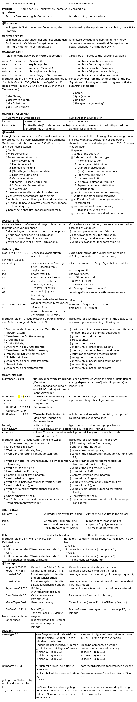
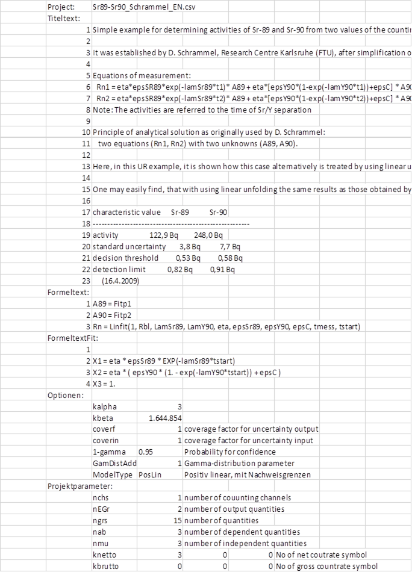
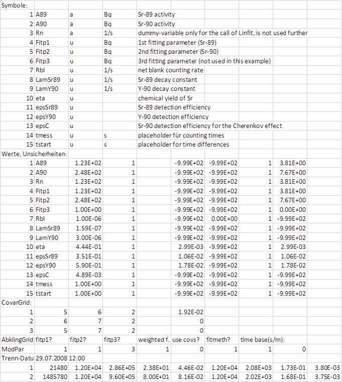

2.8. Struktur der Projektdatei¶
Die Kenntnis des Aufbaus einer Projektdatei kann für eine automatisierte Anwendung von UncertRadio nützlich sein. Z.B. bei regelmäßigen Wiederholungen einer Sr-89/Sr-90-Analyse mit linearer Entfaltung, die immer nach dem gleichen Schema erfolgt, wird man eine Grundform der UncertRadio-Projektdatei erstellen, in der sich bestimmte Teile von Messung zu Messung wenig oder gar nicht ändern. Ein anderer Teil jedoch, die Reihe der gemessenen Zählraten, wird sich von Messung zu Messung ändern. Diese „beweglichen” Daten können beispielsweise mit Visual Basic in Excel in eine solche Projektdatei direkt hineingeschrieben werden.
Zusätzlich zur bestehenden Version einer Projektdatei als .txp-Textdatei, deren Struktur unten beschrieben ist, wurde im Herbst 2013 eine CSV-Datei-Version eingeführt; auf diese wird am Ende dieses Hilfe-Themas eingegangen.
2.8.1. Projektdatei im .TXP-Format als Textdatei¶
Dies kann so geschehen, dass man zunächst die Grundform dieser Projektdatei Zeile für Zeile in eine Arbeitskopie – ebenfalls mit der Dateierweiterung .txp, z.B. „Test2.txp” – kopiert. Nur bei bestimmten Schlüsselwörtern (mit @ eingeleitet, s.u.) werden an der Stelle die der aktuellen Messung entnommenen Daten in diese Kopie hineingeschrieben. Nach dem Schließen dieser Arbeitskopie kann UR z.B. direkt von Visual Basic aus so gestartet werden, dass es diese Arbeitskopie dabei auch lädt, z.B. mit einem „Start Uncertradio.exe Test2.txp”. Dieser externe Start kann auch über die Windows-Konsole erfolgen:
Uncertradio.exe Test2.txp
Die folgende Übersicht zeigt den einfachen Aufbau der Struktur einer Projektdatei (Extension TXP).
Wichtig
Zahlen immer mit „.“ als Dezimaltrennzeichen (kein Komma)!

2.8.2. Projektdatei im Excel-kompatiblen .CSV-Format¶
Das CSV-Format ist ähnlich aufgebaut wie für das *.TXP-Format beschrieben. Die für letztere gegebene Strukturbeschreibung findet sich auch im CSV-Format wieder. Die nachfolgende Abbildung zeigt ein Beispiel. Das Format ist unter Einbeziehung der Beschreibung des TXP-Formats weitgehend ohne umfangreiche Erklärungen verständlich. @Sonstige aus dem txp-Format taucht hier als Optionen auf.
Bemerkung
Wenn man eine TXP-Projektdatei in UR lädt und im CSV-Format speichert, sollte man diese CSV-Datei nicht mit Excel editieren und innerhalb von Excel erneut speichern. Der Grund ist, dass Excel diese CSV-Datei speichert, indem es die darin enthaltenen Fließkommazahlen durch Verringerung der Anzahl der Dezimalstellen verändert, was beim erneuten Laden dieser Datei in UR zu leicht unterschiedlichen Ergebnissen führen kann. Ein solches manuelles Editieren der CSV-Datei sollte besser mit einem einfachen Texteditor wie Notepad erfolgen.
Da die Automatisierung von UR über eine Excelanwendung laufen kann, sei hier erwähnt, dass dieses Problem beim VBA-programmierten Exportieren des CSV-Projekts aus Excel heraus nicht auftritt.


2.8.3. Hinweise zur Eingabe von Eingangsunsicherheiten¶
Es ist zu beachten, dass Unsicherheiten von Eingangsgrößen in verschiedenen Feldern eingegeben werden können. Diese Felder sind in der folgenden Tabelle, die dem TAB „Werte, Unsicherheiten“ entspricht, nochmal aufgeführt.
Im *.TXP-Format der Projektdatei sind dies in dem Abschnitt @Unc-Grid: die unter dem 6. bis 9. Bullet beschriebenen Felder; im CSV-Format sind dies im Abschnitt „Werte, Unsicherheiten” die Spalten 5 bis 8 (E bis H).
Ein Unsicherheitswert darf nicht in Spalte 10 eingegeben werden; abhängig von den Verteilungstypen ist einer der in der folgenden Tabelle als Spalten 6 bis 9 angegebenen Spalten zu verwenden.
Spalte |
Name |
Typ |
Beschreibung |
|---|---|---|---|
6
|
StdDev
formula
|
Text
feld
|
Formel für die Standardabweichung der
Messgröße; keine Formel, wenn die
(N+x)-Regel selektiert wurde;
(der interne Erweiterungsfaktor ist immer 1);
als Dezimalpunkt ist immer „.“ zu verwenden
|
7
|
StdDev
value
|
Zahlen
feld
|
Wert der Unsicherheit für
Normalverteilung;
Bei Selektion der (N+x)-Regel ist in
diesen Zellen nichts
einzutragen!
(der interne Erweiterungsfaktor ist immer 1)
|
8
|
Half
width
|
Zahlen
feld
|
Halbbreite der Rechteck-/Dreiecksverteilung
verteilung
(der interne Erweiterungsfaktor ist immer 1)
|
9
|
abs./rel.
|
select
feld
|
Festlegung, ob die Unsicherheit aus
Sp. 6, 7 oder 8 als
absoluter oder als relativer Wert
zu nehmen ist.
|
10
|
abs.
std.Unc.
|
Zahlen
feld
|
(kombinierte) absolute Standardunsicherheit
aus den Spalten 6, 7, 8 und 9;
Achtung: Ein vom Benutzer eingegebener
Wert wird immer vom Programm überschrieben!
|
Wenn in die Spalten 6 bis 8 Werte mit einem Erweiterungsfaktor ungleich eins eingetragen werden, muss der Parameter coverin in derselben Projektdatei auf diesen Erweiterungsfaktor gesetzt sein. UncertRadio konvertiert dann alle Eingangsunsicherheiten auf den internen Erweiterungsfaktor 1; nach den Berechnungen gibt UncertRadio die Unsicherheiten mit dem im Projekt definierten Erweiterungsfaktor coverf multipliziert aus.